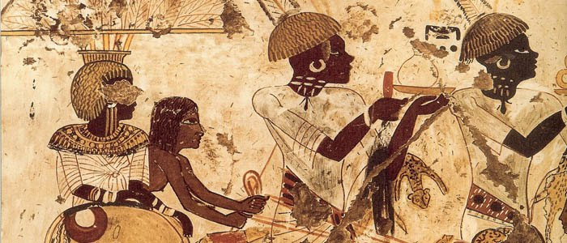
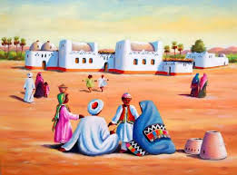
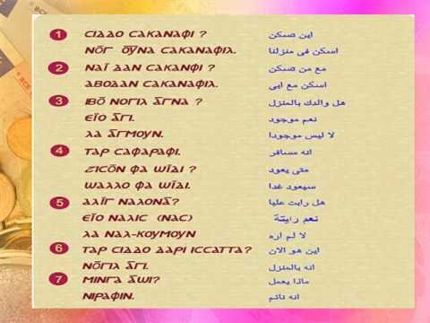
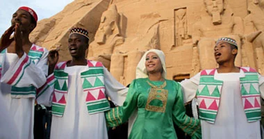
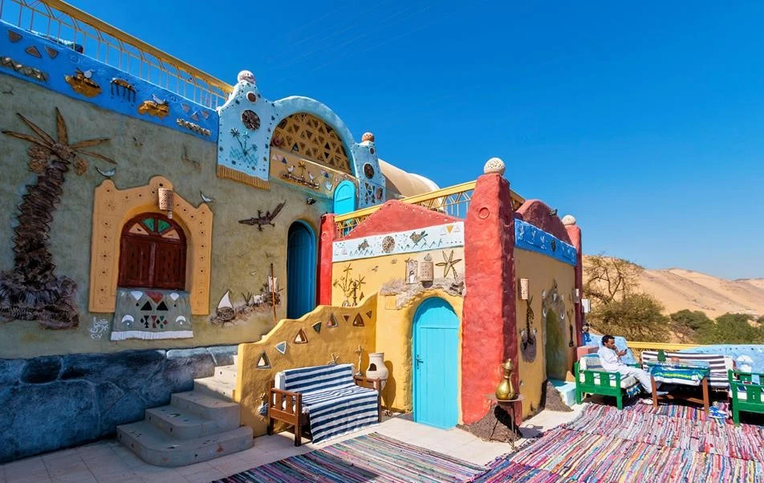
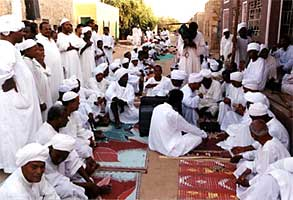
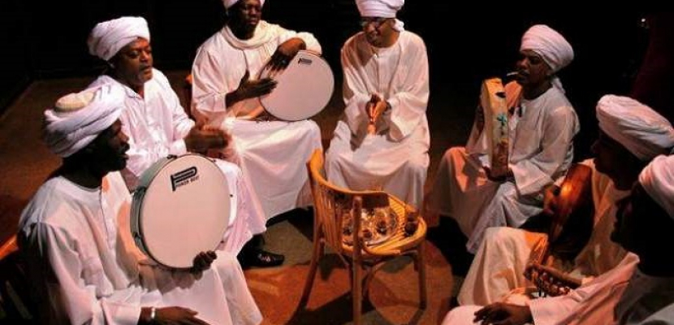
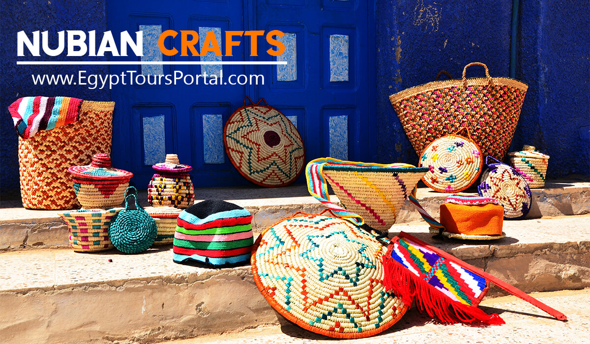

تاريخ الحضارة النوبية
حضارة النوبة واحدة من أقدم حضارات العالم، تعود أصولها إلى ما لا يقل عن 5000 قبل الميلاد. تكشف الاكتشافات الأثرية أن المجتمعات النوبية المبكرة كانت ماهرة في الصيد، والماشية، والزراعة فيما بعد. أصبحت المنطقة أكثر تطوراً، مما أدى إلى ظهور ثقافة كِرما حول عام 2500 قبل الميلاد، وهي واحدة من أولى الحضارات المعقدة في أفريقيا. كانت كِرما، العاصمة النوبية الأولى، مشهورة بمعمارها المبني من الطوب اللبن، والفخار، والحرف اليدوية المتقدمة، مما يعكس مجتمعًا ذو هياكل اجتماعية معقدة وحكم.
ظهرت مملكة كوش حول عام 1070 قبل الميلاد بعد تراجع مصر الحديثة، وأصبحت إمبراطورية نوبيّة قوية عاصمتها نبتة، ثم مروي. حكم النوبيون مصر خلال الأسرة الخامسة والعشرين، مع سلالة من الفراعنة النوبيين الذين حاولوا الحفاظ على التراث المصري واستعادته.
مروي، العاصمة الأخيرة لكوش، مشهورة بصناعات الحديد والأهرامات التي تختلف في الأسلوب عن تلك الموجودة في مصر، مما يعكس تطور العمارة والروحانية النوبية. تراجعت الحضارة النوبية حوالي عام 350 م بعد صراعات مع مملكة أكسوم، لكن إرثها استمر في الثقافة، واللغة، والفن النوبي.

Nubian Race & Origin: "Who are the Nubians
The Nubians are one of Africa’s most ancient and enduring ethnic groups, originating in the Nile Valley region of what is now southern Egypt and northern Sudan, with evidence of their presence dating back over 50,000 years. They are considered one of the world’s oldest ethnic groups, known for their kindness, hospitality, and rich cultural heritage, which is deeply rooted in some of Africa's earliest civilizations. The first recorded mention of the Nubians in Egyptian history appears in trading accounts from 2300 BCE, highlighting their role as key players in ancient Egypt.
Nubia's earliest societies, such as the Kerma culture (2500-1500 BCE) and the powerful Kingdom of Kush, were advanced in metalworking, agriculture, and religious practices, and contributed significantly to trade networks linking sub-Saharan Africa with the Mediterranean Sea and the Near East. The Kingdom of Kush rose to prominence and, under King Piye in the 8th century BCE, even conquered and ruled Egypt as its 25th Dynasty, demonstrating Nubia's formidable military and political influence.
Known as “Ta-Seti” or “The Land of the Bow” by the Egyptians, Nubians were legendary for their prowess in archery, serving as elite warriors in the Egyptian army, including the feared Medjay paramilitary force. Over time, the Nubians played diverse roles in ancient Egyptian society as merchants, temple attendants, and skilled artisans, becoming integral to Egypt’s success. In the medieval period, many Nubians converted to Christianity, forming the kingdoms of Nobatia, Makuria, and Alodia, and later adopted Islam.
Despite living in two modern countries, the Nubians have preserved their unique culture, language, and traditions, with five Nubian languages which are Kenzi, Nobiin, Birgid, Midob, and Kordofan Nubian spoken across various regions today. Descendants of these early African civilizations, Nubians maintain a resilient cultural heritage that remains a vital part of Egyptian and Sudanese societies, contributing significantly to Egypt’s rich historical and tourism landscape.

تاريخ شعب النوبة
تقع منطقة النوبة على نهر النيل، بمساحة 123,000 كيلومتر مربع بين أسوان في جنوب مصر والخرطوم في شمال السودان. كانت من أولى الحضارات القديمة في إفريقيا، وتاريخها يمتد من 2000 قبل الميلاد وحتى 1504 م. أسس الملك ألارا، أول ملوك كوش، سلالة نبتة، التي تُعرف اليوم بالسودان. توسع كاشتا، الخليفة، نفوذ كوش شمالاً إلى الفنتين والكرنك.
خلال فترة المملكة الحديثة في مصر (1570-1070 قبل الميلاد)، غزا الفرعون تحتمس الأول النوبة حوالي عام 1500 قبل الميلاد. اشتهرت مملكة كوش بكونها موطنًا للعديد من الممالك القوية، بما في ذلك حكم مصر في القرن الثامن قبل الميلاد.
حكم ملوك كوش مصر لقرابة 100 سنة، ودمجوا بعض التراث الثقافي المصري، مع استمرار حكمهم في بعض الفنون والديانات. انتهت مملكة كوش في القرن الرابع الميلادي، وتوزعت النوبة بين مصر وسلطنة سنار، مع ظهور العرب والإسلام في المنطقة.

الثقافة النوبية الغنية والفريدة
حضارة النوبة من أقدم الحضارات في العالم، وتعود أصولها إلى عصور ما قبل التاريخ. تتضمن ثقافتهم الموسيقى، والرقص، والحكايات، والفنون الشعبية، والملابس التقليدية، والمهرجانات.
النوبيون معروفون بإيقاعاتهم، وأدواتهم الموسيقية التقليدية مثل “القصار” والطبول. يستخدمون أيضًا أدوات حديثة في الموسيقى المعاصرة، ويحتفظون بلغة فريدة تميزهم عن غيرهم.

المعنى المخفي والمشرف للنوبة
اسم “نوبة” يرجع إلى أصل من الكلمة المصرية القديمة "نوب"، وتعني “الذهب”، إشارة إلى ثروات المنطقة من المناجم. ويشير النوبيون إلى أرضهم باسم “تا-سيتي”، أو “أرض القوس”، تقديراً لسمعتهم كراميين ورماة.
تُعبر الهوية النوبية عن استقلالية وتراث عريق، وتاريخ طويل من المقاومة والتميز، مما يجعلهم شعبًا فخورًا ومؤثرًا في مصر والسودان.

اللغة النوبية المذهلة والمحفوظة
تتفرع اللغة النوبية إلى عدة لهجات رئيسية، أهمها الكنزي، التي تُستخدم في منطقة أسوان العليا وجنوب أسوان، وتتميز بمفردات ونطق فريد. وتُعتبر لغة حيوية وتحافظ على التراث الشفهي، بما في ذلك الأمثال، والأشعار، والقصص الشعبية.

الأزياء والموضة النوبية
الملابس النوبية التقليدية عملية ومعبرة، حيث يرتدي الرجال “الجلباب”، بينما ترتدي النساء فساتين ملونة مزخرفة. المجوهرات الفضية، مثل الأساور والعقود، مهمة وتدل على المكانة الاجتماعية.

التصميم العظيم للمنازل النوبية
منازل النوبة معبرة فريدة من نوعها، مبنية من الطوب اللبن، وتتميز بألوان زاهية وزخارف هندسية. تتميز بتصاميم ذات قباب ونوافذ صغيرة للحفاظ على برودة الداخل، مع ساحات واسعة للعائلة.

مناسبات الزواج النوبية
حفلات الزواج النوبية ليست مجرد مناسبات اجتماعية، بل هي طقوس للهوية واحتفالات بالتراث والأسرة والمجتمع. تشمل الطقوس ليلة الحناء والتقاليد القديمة، حيث يرتدي العروس والعرس زيهم النوبى المزين بالمجوهرات.

المهرجانات النوبية
المهرجانات النوبية غنية بالتقاليد، وتحتفل بالمناسبات الدينية مثل عيد الفطر والأضحى، مع طقوس مميزة وأطعمة تقليدية. ويوم النوبة العالمي يُحتفل به في 7 يوليو، ويجمع بين الروحانية والاجتماع.

الأدوات الموسيقية النوبية
الأدوات الموسيقية الأساسية تشمل “الطنبور” و”الطبل” والإيقاعات الجسمية. مع التطور، أُدخلت أدوات حديثة مثل العود والناي والأكورديون.

الحرف النوبية
الحرف النوبية تتضمن الحياكة من سعف النخيل، وصناعة الفخار، والمجوهرات من الفضة والذهب، والنسيج الملون، والأثاث المنحوت، وتعد مصدر فخر وحفاظ على التراث.
